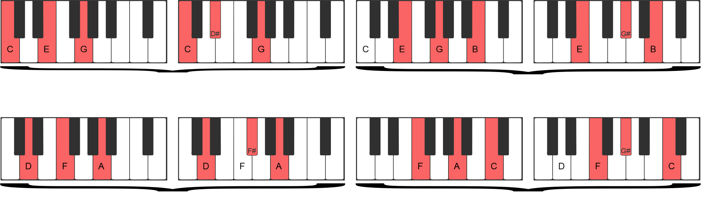

Through this tutorial, you will be able to understand some basic music theory concepts and, with that, play simple songs like the ones listed in the My-Keyboard songbook. Don't be afraid of the term "theory", it's really simple, I promise!
1 - Playing with musical notes
On this keyboard we have 15 musical notes, where the white keys are the "natural notes" (C, D, E, F...), and the black keys are the accidental notes (commonly known as sharps and flats), for example: C#, which is a note between C and D.
P.S.: Calm down, programmers. In the example above, it's not the "C#" you're thinking of LOL!
The other 5 musical notes on the keyboard, are the continuation of the same notes, in a different tonality (which we call "octave"), starting from a new C, until the last of them that represents an D.
2 - Playing chords
Chords are a union of two or more notes. Playing them simultaneously will result in a more harmonious sound. They can be major ("happier" sounds) or minor (deeper or maybe "sad" sounds). We got some examples below, try it yourself:

Now you can play the keyboard properly! How about trying to play one of the songs available in My-Keyboard's Songbook? By clicking on a song, you'll see a practical manual on how to play them in a very easy way!
3 - Show Keys and Notes
The "Show keys" selector represents the keyboard shortcuts that, in a desktop environment, can be used to play notes. The "Show notes" selector represents the musical notes corresponding to the keyboard keys.
4 - Using the metronome
The metronome is a device used to mark time intervals from a "click" to each beat in a music. You can use it to play at the exact musical time you want, which can be faster or slower, depending on your purpose of each song to be played.
A good tip for using the metronome is to start slowly and then increase the speed as you feel comfortable on it. You should try it!